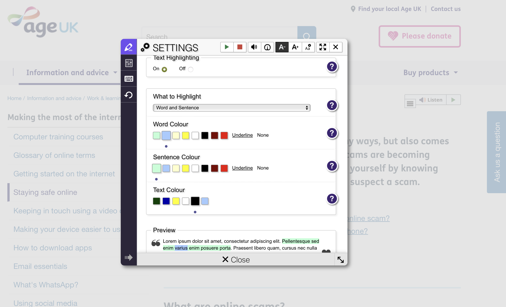
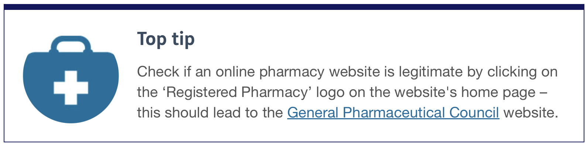
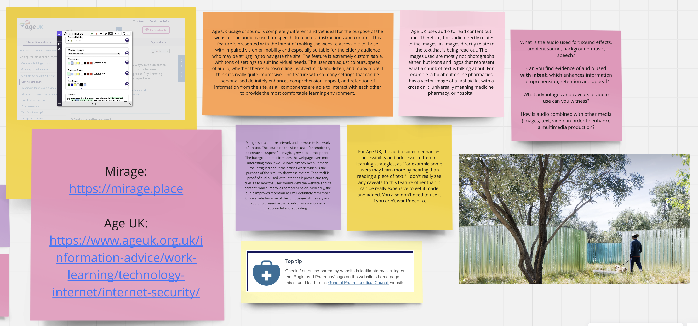

What is the audio used for: sound effects, ambient sound, background music, speech? Can you find evidence of audio used with intent, which enhances information comprehension, retention and appeal?
Mirage is a sculpture artwork and its website is a work of art too. The sound on the site is used for ambience, to create a suspensful, magical, mystical atmosphere. The background music makes the webpage even more interesting than it would have already been. It made me intrigued about the artist's work, which is the purpose of the site - to showcase the art. That itself is proof of audio used with intent as it proves auditory cues as to how the user should view the website and its content, which improves comprehension. Similarily, the audio improves retention as I will definitely remember this website because of the joint usage of imagery and audio to present artwork, which is exceptionally successful and appealing.
Age UK usage of sound is completely different and yet ideal for the purpose of the website. The audio is used for speech, to read out instructions and content. This feature is presented with the intent of making the website accessible to those with impaired vision or mobility and especially suitable for the elderly audience who may be struggling to navigate the site. The feature is extremely customisable, with tons of settings to suit individual needs. The user can adjust colours, speed of audio, whether there's autoscrolling involved, click-and-listen, and many more. I think it's really quite impressive. The feature with so many settings that can be personalised definitely enhances comprehension, appeal, and retention of information from the site, as all components are able to interact with each other to provide the most comfortable learning environment.

What advantages and caveats of audio use can you witness?
Mirage website is visually stunning and audio present in the background provides an extra channel of information, conveying meaning and emotion. Funnily enough, because of the audio I had an impression that the art is based in Asia for some reason, but upon reading about the artwork I learned that it's actually based on California. Furthermore, audio can easily get overused if browsing through the website for a while plays you the same music. Luckily, there is a button to stop the sound to avoid cognitive overload. Also, as much as I loved the audio, I will probaly remember the images of the artwork and the photographs of sand samples it was made out of, rather than the background sound.
For Age UK, the audio speech enhances accessibility and addresses different learning strategies, as "for example some users may learn more by hearing than reading a piece of text." I don't really see any caveats to this feature other than it can be really expensive to get it made and added. You also don't need to use it if you don't want/need to.
How is audio combined with other media (images, text, video) in order to enhance a multimedia production?
For the Mirage website, the audio is related in a sense that encapsulates the vibe and mood that the artwork aims to bring or be interpreted in. You can click through the images at your own pace and it doesn't influence the audio. Therefore, the audio just plays in the background and is not dependent on the images. But it does give them extra context overall.
Age UK uses audio to read content out loud. Therefore, the audio directly relates to the images, as images directly relate to the text that is being read out. The images used are mostly not photographs either, but icons and logos that represent what a chunk of text is talking about. For example, a tip about online pharmacies has a vector image of a first aid kit with a cross on it, universally meaning medicine, pharmacy, or hospital.


Audio of a computer disc drive operating:
Ambient audio of a busy cafe:
Both sounds taken from BBC Sound Effects
I was struggling to pick sounds that fit my topic, so I decided to go with the ones that most relate to it - a computer disc working and a cafe chatter that might help with the feeling of exclusion or loneliness. I understand that this is a strech, but ideally I would use sound to convert my text into speech. I would record myself reading out the sample texts, but I currently have the flu and can't talk, so I'm working with what I can.
Edited sounds:
WAV
MP3s
From top to bottom, left to right:
WAV trim in Standard (170-210 kbps) quality, Stereo
MP3 derivative in Medium (145-185 kbps) quality, Joint Stereo
MP3 derivative in Standard (170-210 kbps) quality, Stereo
MP3 derivative in Medium (145-185 kbps) quality, Forced export to mono
MP3 of another sound I chose in Medium (145-185 kbps) quality, Stereo
MP3 derivative of another sound I chose in Extreme (200 kbps) quality, Stereo
To be honest there is barely any difference between those audio files when it comes to sound. The only one that is noticably different is the mono file (first from right). I noticed that in that one there is more "background silence noice" or the ringing in the back is more clear and it also plays from a singular channel. That said, all samples are still usable. I probably wouldn't use the mono one, as the professional standard is stereo. Similarily, I wouldn't use the one is Extreme high quality because it takes more storage/space, but doesn't actually improve the audio quality, as it was already clear plus it doesn't matter that much for an ambient noice of a crowd. It could probably be useful for a podcast or speech or music, but not in this instance. I guess that means that it's worth to try to use sound that is still high, usable quality, but requires a smaller file size so that it can help the loading times and SEO.